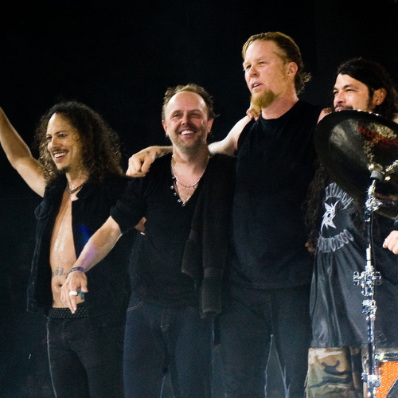

|
Orelsan, de son vrai nom Aurélien Contentin est un rappeur,
chanteur, compositeur, réalisateur et scénariste français, né le 1er août 1982 à Alençon (Orme).
Ses genres musicaux sont le hip-hop alternatif, le rap conscient, l’électro-pop, le dirty rap et
le comedy rap. Son single L’Odeur de l’essence sorti en 2021, dénonce les travers de la société, les dérives de la politique, le racisme et les inégalités. Orelsan a participé à de nombreux événements engagés pour le développement durable, comme le festival We Love Green, le festival Panoramas et le festival Cabaret Vert. Il va aussi prochainement participer au festival éthique et responsable Terres du son. Source : Wikipédia(Orelsan) - Wikipédia(We Love Green) - Wikipédia(Festival Panoramas) - Wikipédia(Le Cabaret Vert) - Terres du son |

|
Yannick Noah est un joueur de tennis et un chanteur
franco-camerounais, né le 18 mai 1960 à Sedan dans les Ardennes. Ses genres musicaux sont le
reggae, le World, la variété et la ballade. Son titre, Aux arbres citoyens, de l’album Charango sorti en 2006, défend l’environnement et incite le public à le préserver. Source : Wikipédia(Yannick Noah) |

|
Pomme, de son vrai nom Claire Pommet est une autrice, compositrice,
interprète et musicienne née le 2 août 1996 à Décines-Charpieu (Rhône). Ses genres musicaux sont
le folk rock, la musique traditionnelle et la pop. Sa chanson à perte de vue, de l’album du même nom sorti en 2021, appelle à la préservation de la faune en abordant le sort des cétacés, en particulier des bélugas. Pomme a décidé de reverser tous les bénéfices de cette chanson au GREMM (Groupe de Recherche et d’Éducation sur les Mammifères Marins). Pomme a participé à des événements engagés pour le développement durable, comme le festival éthique et responsable Terres du son et le festival Cabaret Vert. Source : Wikipédia(Pomme) - Wikipédia(Le Cabaret Vert) - Wikipédia(Festival Terres du son) |

|
Tryo est un groupe français actif depuis 1995 et actuellement
composé de 3 membres :
Le groupe Tryo fait parti du collectif The Freaks, qui vise à adopter des comportements pour lutter contre la pollution, le réchauffement climatique, la sur-consommation et pour la proytection de la biodiversité. Source : Wikipédia(Tryo) - The Freaks |

|
Les Cowboys Fringants est un groupe québécois, particulièrement
engagé pour l’indépendance du Québec et l’environnement. Ses genres musicaux sont le folk et la
country. Ses membres actuels sont :
Les Cowboys Fringants ont participé à un événement engagé pour le développement durable, le festival éthique et responsable Terres du son. Source : Wikipédia(Les Cowboys Fringants) - Wikipédia(Festival Terres du son) |

|
Lord Esperanza, de son vrai nom Théodore Desprez, est un rappeur et
chanteur de pop urbaine, né le 30 septembre 1996 à Paris. Il est actif depuis
2015. Il a chanté pour la pétition #ChangeTaDate lancée par TooGoodToGo, qui lutte contre le gaspillage alimentaire. Source : Wikipédia(Lord Esperanza) |

|
Jérémy Frérot est un chanteur français, né le 17 mars 1990 à Bruges
(Gironde). Il commence sa carrière musicale en 2011, avec Florian Garcia. Leur duo Fréro
Delavega se sépare en 2017. Jérémy Frérot se lance alors en solo en 2018.
Son titre L’Homme Nouveau, de l’album Matriochka sorti en 2018, évoque l’impact des activités humaines sur l’environnement. Jérémy Frérot fait partie du collectif The Freaks, qui vise à adopter des comportements pour lutter contre la pollution, le réchauffement climatique, la sur-consommation et pour la protection de la biodiversité. Source : Wikipédia(Jérémy Frérot) - The Freaks |
|  | Metallica est un groupe de métal américain, créé en 1981. Ses
genres musicaux sont le heavy metal, le thrash metal et le speed metal. Il est considéré comme
l’un des plus grands groupes de métal. Ses membres sont :
Le groupe Metallica a créé la fondation All Within My Hands qui cherche à récolter de l'argent pour la création de communautés durables et pour rendre d'autres services locaux comme la lutte contre la faim. Source : Wikipédia(Metallica) - All Within My Hands |

|
Aldebert, de son nom complet Guillaume Aldebert, est un auteur,
compositeur et interprète français, né le 7 juillet 1973 à Paris. Ses chansons s’adressent
principalement à un jeune public. Son titre Monsieur Toulmonde, de l’album Enfantillages sorti en 2008, parle de l’impact des activités humaines sur l’environnement et dénonce l’inaction face à ces problèmes. Source : Wikipédia(Aldebert) |

|
Ridan, de son vrai nom Nadir Kouidri, est un chanteur français né
le 23 juin 19751, à Brou-sur-Chantereine (Seine-et-Marne). Il est actif depuis
2004. Son titre Objectif Terre, de l’album L'Ange de mon démon sorti en 2007, parle d’écologie, de la dégradation de la nature et de la pollution. Source : Wikipédia(Ridan) |